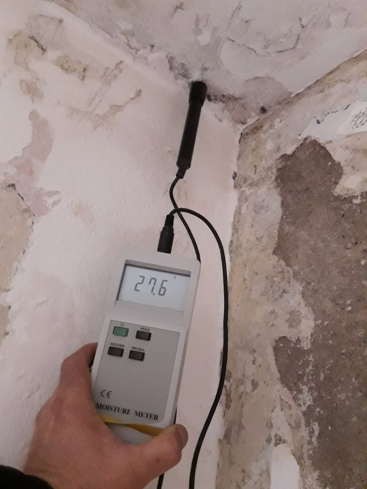
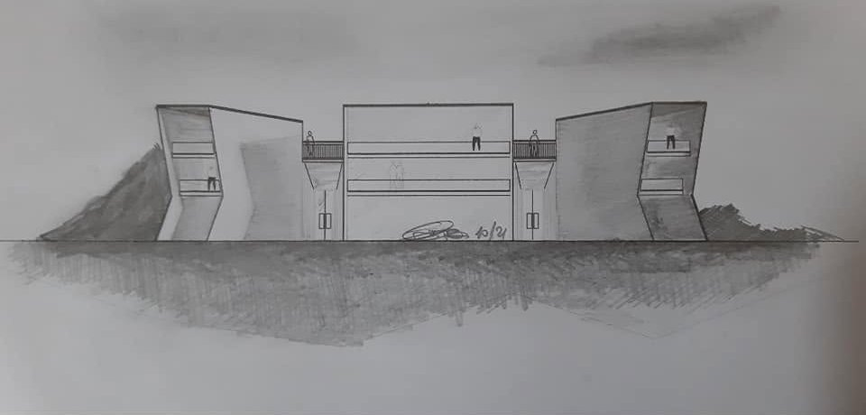
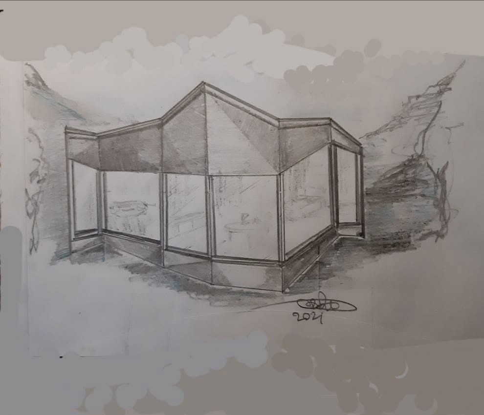
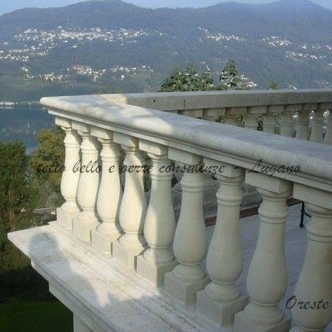

Paradiso · Lugano · dal 1998
Trovare la perdita prima di demolire.
Perdite, infiltrazioni e umidità negli edifici: le cerchiamo con analisi non invasive, poi le risolviamo. Tetti in legno, coperture, impermeabilizzazioni e direzione lavori, da Paradiso.

Misura dell'umidità in pareteFoto TEK
Dal1998iscritta al Registro di commercio del Ticino
ApproccioNon invasivoprima si misura, poi si interviene
Direzione lavoriEsperienza trentennalenelle loro parole
SedeVia Calprino 76900 Paradiso
Il metodo
Prima si guarda dentro il muro.
- 00L'edificio com'è. Macchie, odore di muffa, intonaco che si stacca: il sintomo non dice da dove arriva l'acqua.
- 01Tetto. Una zona fredda al raccordo tra copertura e muro: acqua che entra dall'esterno.
- 02Impianto. Una traccia calda nella parete: un tubo che perde.
- 03Cantina. Una fascia fredda alla base dei muri: umidità di risalita.
Tre cause diverse, tre interventi mirati. Spesso senza demolizioni strutturali.
01Infiltrazione dal tetto
02Perdita dall'impianto
03Umidità di risalita
Schema illustrativo. Le zone umide evaporano e risultano più fredde, un tubo d'acqua calda che perde risulta più caldo.
Servizi
Dalla diagnosi al tetto finito.
- 01
Ricerca di perdite e infiltrazioni
Acqua dall'esterno, da un impianto idraulico difettoso o dal terreno. Termografia e misure strumentali per trovare la causa, non solo la macchia.
- 02
Umidità, muffa e cedimenti
Umidità di risalita capillare nelle zone interrate, odore di muffa, crepe e cedimenti strutturali: analisi non invasiva della situazione attuale.
- 03
Perizie
Analisi peritale per tutelare gli interessi del committente sulla sua proprietà, con apparecchiature di misura.
- 04
Tetti in legno e coperture
Carpenteria lignea per la copertura dei tetti, lattoneria e finiture. Coperture civili, commerciali e industriali.
- 05
Impermeabilizzazioni e isolazioni
Tetti piani, terrazze e isolazioni termiche, per fermare l'acqua e il freddo dove entrano.
- 06
Progettazione e direzione lavori
Ristrutturazioni e riqualificazioni, anche di rustici: progetto, scelta delle finiture e direzione lavori fino alla consegna.
Lavori e disegni
Dal foglio al cantiere.



Il loro motto
Prevenire è meglio che curare.
Vorbeugung ist besser als Heilung.Mieux vaut prévenir que guérir.
La ditta
Una società anonima di Paradiso, con le mani in cantiere.
TEK Technik Engineering Konstruktion SA è iscritta al Registro di commercio dal 1998: prima a Lugano, dal 2016 in Via Calprino 7 a Paradiso. Nasce come impresa di carpenteria e coperture, poi aggiunge la ricerca di perdite e infiltrazioni negli edifici vecchi e nuovi.
Il loro principio: ridurre o fermare l'acqua scegliendo la soluzione meno invasiva, così spesso si arriva al risultato senza demolizioni strutturali. Un servizio richiesto anche da alberghi, scuole, ospedali e case per anziani.
- Silvia Verucchi
- Amministratrice unica
- Oreste Rizzo
- Direttore
«Quando entriamo in ambienti molto umidi e sentiamo odore di muffa, consigliamo di non sottovalutarlo.»
Dalla presentazione della ditta su Facebook
Come si procede
Quattro passi, nessuna sorpresa.
- 1
Chiamata
Ci raccontate il problema: dove compare, da quando, dopo quale pioggia o lavoro.
- 2
Sopralluogo e misure
Termografia, misure di umidità e verifica della struttura, senza rompere.
- 3
Diagnosi scritta
La causa, le prove e l'intervento proposto, con il preventivo.
- 4
Intervento
Tetto, impermeabilizzazione o impianto: eseguito e seguito in direzione lavori.
Contatto
Una macchia sul muro? Partiamo da lì.
- Cellulare e WhatsApp076 401 97 75
- Emailinfo@tekgroup.ch
- IndirizzoVia Calprino 7, 6900 Paradiso
- FacebookTEK Technik Engineering Konstruktion SA
ParadisoVia Calprino 7, a due passi dal lago
Apri in Google Maps